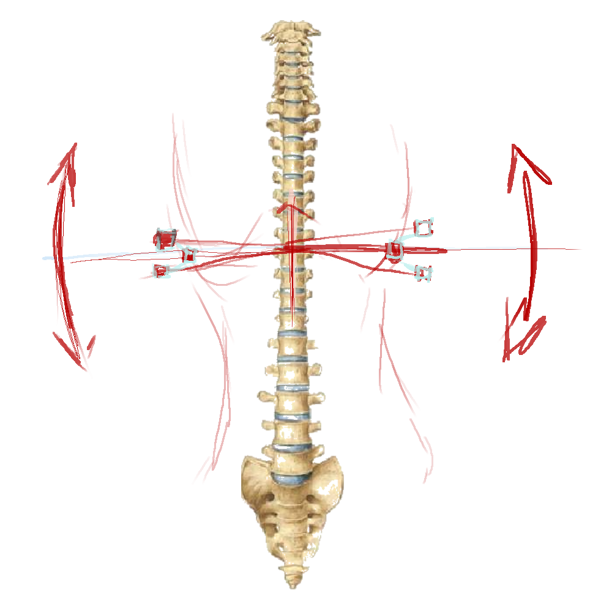
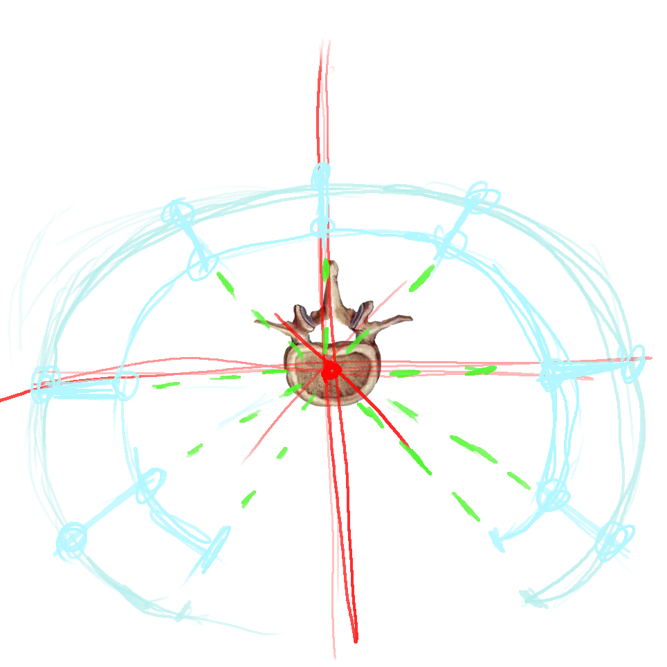
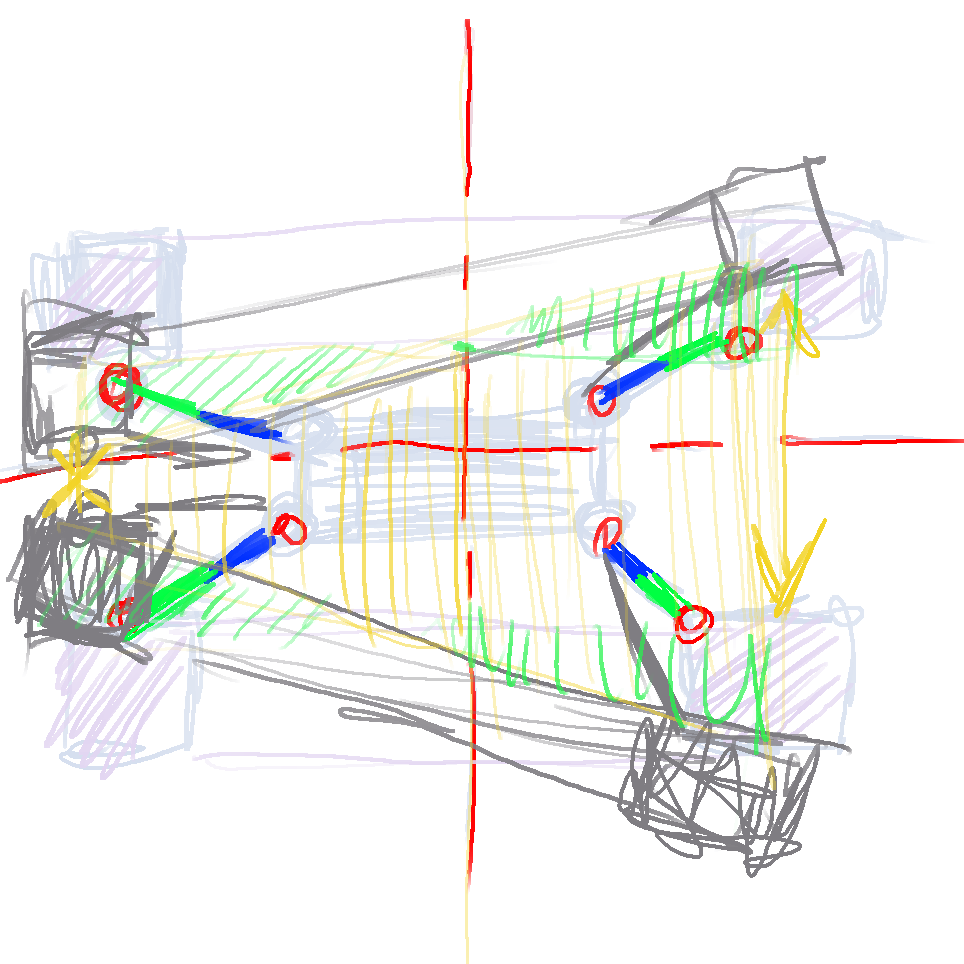

Тайные технологии двойного назначения.
В глубине сибирских лесов появилась новая концепция экзоскелетов.
Основанная идея заключалась в полной имитация подвижности суставов.
А самой главной деталью стала иметация работы межпозвоночных дисков.
Система рычагов и шарниров способна эмитировать действие реального позвоночника.
Носимая нагрузка пропорциональна материалам изготовления.
Константы легшие в основу разработки экзоскелета экзопозвоночника;
- при изменении формы межпозвоночный диск не изменяется в объеме.
- ограниченность подвижности позвоночника и суставов.
- система плечевого пояса с руками является навесной.
Не ужели Кузьмич разгадал тайну, как сделать в механике эмуляцию поведения позвоночника.
Действительно так, но подробную схему мы предоставить не можем, так как это секретная информация.
Нам позволили показать лишь ручные наброски концептуальных схем.
  
Почему же данная разработка оказалась двойного назначения.
Сначала + и - данной разработки
Плюсы;
- Полное снятие всей нагрузки с суставов
- Перенесение огромных статических и динамических нагрузок
- Возможность использования в различных условиях окружающей среды
Минусы;
- Долгая настройка под пользователя
- Нет отработанной технологической карты изготовления
- Большой уровень силы и выносливости носителя(хотя этот момент решен, но этого нам не показали)
В плюсах и минусах и заключается вся двойственность
Где же можно использовать данную технологию
- Медицина:
От реабилитации после переломов, в том числе спины, до борьбы с дцп

- Спорт:
Как раз из минусов, для развития силы и выносливости без травм для скелета.
В более облегченной версии можно использовать для тренировки акробатики(не забывайте одевать шлем)
Увы с дуру можно и .... сломать, так что мышцы порвать можно.


- Космос:
Безваздушное пространства в условиях невесомости опасная среда и хороший подвижный скафандра это
проблема

- Военное назначение:
Живая боевая единица способная посоперничать с БТР или легким танком.
И кто сказал, что наполнителем экзоброни должен быть именно человек)))))

Проверял тут